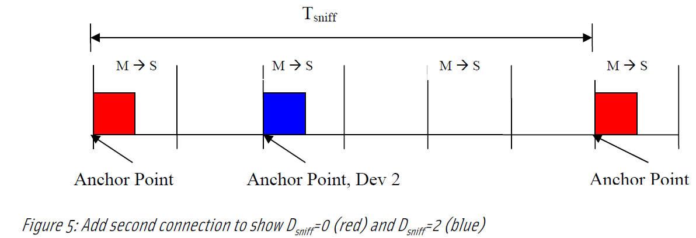
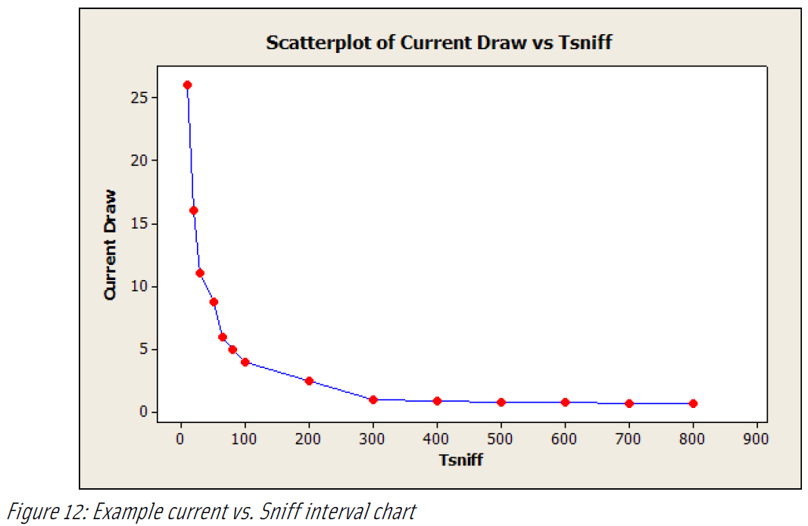

Deep into bluetooth sniff mode
Table of Contents
1 Theory
1.1 CLOCKS AND DATA COMMUNICATIONS
In Bluetooth wireless technology each side of the connection has a clock that is used to determine when to send, and listen for, data. The clock does not provide the time base for individual bits, but rather acts in a manner similar to the flow control by defining when a packet of data should be sent and when the receiver should listen for that data.
In Bluetooth wireless technology, the Slave device must listen for a transmission from the Master device. Since both devices operate using their own independent clocks, and the master’s data transmissions are based on its own clock value, it is important that the slave have enough information to know when, and for how long, to listen.
Bluetooth clocks are not synchronized to an absolute value like local time of day. What is important is the difference between the master and slave clock. If the master’s clock value is 100 and the slave’s is 91, then the clock offset is 9. Since the slave device knows the offset, and knows that the master will only transmit on even slot numbers, the slave will add 9 to its clock value to determine when to listen.
Any clock has an inherent level of accuracy, meaning that it will run slightly faster or slower than the nominal frequency. Over time, this constant error will accumulate into a non-trivial deviation from the nominal clock value. This is called drift. How long it takes for the accumulated error to become non-trivial depends on the accuracy of the clock. Clock accuracy information is shared between the master and slave devices during link establishment. For Bluetooth timing calculations the drift rate of both the master and slave clocks must be considered.
The slave will also calculate a value for how long it must continue listening. The longer it listens, the more power is consumed, so the value must be long enough to provide a high probability that anything sent its way will be heard, but not indefinite. This period of listening time is called the uncertainty window and brackets the theoretical point in time when a transmission should begin if the two clocks are perfectly synchronized and jitter(a per-instance variance from the ideal and does not accumulate over time.) and drift are both zero.
1.2 SLOT TIMING
Bluetooth protocols are driven by a free running system clock with a frequency of 3.2 kHz, which yields a period of 312.5 μs. The 312.5 μs slot timing is used during inquiry and paging and will not be discussed here.
Communications between two connected devices are based on a period of 625 μs, or twice the period of the basic clock. In Bluetooth-speak this period is known as a slot and is the basic unit of Bluetooth time measurement.
Reliable Bluetooth communication depends on knowing when the next slot starts. In an ideal universe this would be exactly 625 μs from the start of the current slot. In the real world, things are not so precise.
- clock offset
During connection establishment the master sends a Frequency Hop Synchronization (FHS) to the slave. Along with other information, this packet contains the current clock value of the master. The slave device uses this value to compute the difference (offset) between its clock and the master’s clock.
- jitter
The instantaneous timing shall not deviate more than 1 μs from the average timing. So the maximum jitter is, by definition, ±1 μs.
- drift
In STANDBY and in Park, Hold, and Sniff modes the native clock may be driven by a low power oscillator (LPO) with worst case accuracy (± 250ppm). Otherwise, the native clock shall be driven by the reference crystal oscillator with worst case accuracy of ±20ppm.
A device may request the drift and jitter of its partner’s clock by using the LMP command LMP_timing_accuracy_req.
- uncertainty:
This is calculated by the slave from the previously discussed information.
Using this information, the time for the kth slot boundary may be calculated using this equation:
Some simplifying assumptions can be applied when computing tk. Since the actual drift value for each slot is unknown, the worst case value of 20 (or 250 for the low power clock) ppm is used. Since the slot length also remains fixed, this equation is used:
tk = (((1 + d) * 625) * k) + j + offset
For the low power clock (250 ppm) this simplifies to:
tk = (625.15625 * k) + j + offset
For the high accuracy (20 ppm) clock:
tk = (625.0125 * k) + j + offset
The core specification (Volume 2, 2.2.5.1) suggests that the slave device in normal operation should use an uncertainty window of 20 μs. (See Figure 1). That is, the slave will start listening for a master to slave transmission 10 μs before its own slot boundary and continue for 10 μs after the boundary. If no packet addressed to the slave is detected in that window, the slave may cease listening and wait for the next window, two slots later. Obviously keeping the slave’s uncertainty window as small as possible is a key to conserving power, which is important to devices such as headsets that operate on small internal batteries.
Each time the slave device receives a packet from the master, it will update its local timing data using the actual packet arrival time. This allows the slave to begin looking for the next transmission at the received packet arrival time plus 1240 μs (two slot times minus the 10 μs, i.e. one half of the uncertainty window). The implication is that the slave must receive periodic transmissions in order to keep in sync with the master.
If the transmissions are spread further apart, the slave must widen its uncertainty window, or it may never be able to re-sync with the master, causing a link loss due to link supervision timeout. When two connected devices are unable to exchange packets for an agreed-up period of time, the link supervision timeout value, the connection is automatically terminated.
Consider an example from two real devices. The trace snapshot in Figure 2 below illustrates the link maintenance packet exchanges using POLL and NULL packets. Since neither packet carries payload data they are very small, which reduces power consumption. The master device sends a POLL (slaves are not permitted to send POLL packets). A POLL packet requires the slave to respond even if it has no data to transmit at the time. If the link is not currently carrying LMP or higher protocol data, the slave will respond with a NULL packet.
The TimeDelta field shows that the master sends a POLL packet at approximately 20 ms intervals. Dividing 20 ms by the slot time of 625 μs means that the master sends a POLL every 32 slots (approx.). Assuming the slave is on its low power clock, and using the previously derived equation, the worst case clock drift is 5 μs. For the active master, which is using its higher accuracy clock, the drift is constrained to 0.4 μs. Since each device has a maximum allowed jitter of 1 μs, the maximum deviation from ideal is calculated by adding these terms.
Slave drift + Slave jitter + Master drift + Master jitter -> 5 μs + 1 μs + 0.4 μs + 1 μs = 7.4 μs
This result, 7.4 μs, aligns quite well with the ± 10 μs uncertainty window required by the Bluetooth Core Specification.
Keep in mind that it is the slave’s duty to keep its clock in sync with the master and to adjust the uncertainty window if the interval between master transmissions increases.
When two devices do not exchange packets for an extended period of time and lose synchronization, due to sniff mode for example, they will need to resynchronize. Since the master’s clock is always used to control the link, the work must be done by the slave device. The slave calculates the next master to slave transmission slot, the frequency of that transmission (frequency is determined from the master’s Bluetooth device address and the master’s clock) and the uncertainty window. During this period the slave listens for the master’s transmission, with both devices using their higher accuracy (20 ppm) clocks. As the time between master to slave transmissions increases, it is also necessary to increase the length of the slave’s uncertainty window to guaranty the slave will receive the transmission. The window may be longer than a slot time (625 μs) but cannot overlap the next window – see Figure 3. As an example, if there are no packets exchanged for 1 second, the maximum skew will be ± 42 μs, or an uncertainty window of 84 μs. The slave should start listening for the master’s transmission no later than 42 μs before the predicted slot boundary.
1.3 SNIFF MODE
a connected pair of Bluetooth devices must constantly exchange packets to maintain proper clock synchronization. In the case illustrated the master sent a POLL to the slave at intervals of approximately 20 ms. The interested reader can determine that this equates to 50 POLL/NULL pairs per second. While these packets are short they are still consuming device power even when there is no profile level data to transmit.
Sniff mode is one of three low power modes defined by the Bluetooth core specification, the other two being hold and park state. Sniff mode provides the mechanism to define extended periods of time during which the master and slave devices will not exchange ACL packets. Synchronous packet transmissions, such as SCO and eSCO, are not affected by sniff mode. Sniff mode scheduled absences may allow the local device to conserve power by turning off its radio and entering a low power mode. Sniff mode may also be used by a device that is a participant in multiple piconets (often called scatternet) when it needs to perform some over-the-air action in another piconet.
The following terminology is important when discussing sniff mode, some of the concepts are difficult to express in words so examples will follow the definitions:
- Anchor point
The slot boundary that defines the period when a slave device will listen for a transmission from its master device. The actual point in time where the slave enables its receiver will be derived from the anchor point by subtracting half of the uncertainty window duration. This means the uncertainty window length depends on the duration of link inactivity and the accuracy of the slot clocks on each device.
- Tsniff
Is the number of slots between adjacent anchor points. Since the master can only send data to the slave during even numbered slots, this value must be an even integer greater than zero.
- Dsniff
Is an offset value that must be an even integer between zero and (Tsniff - 2). An anchor point must satisfy the relationship:
Dsniff = Clock_Value (bits 26-1) mod Tsniff
- Nsniff attempt
Is the number of master-to-slave slots, including the anchor point, that the slave shall listen for transmissions from the master. Since this value represents only slots with a clock value divisible by 2, its value must be in the range:
1 <= N <= (Tsniff / 2)
- Nsniff timeout
Is the number of master-to-slave slots that the slave continues to listen for master-to-slave packets after the slave has received a packet containing its own LT_ADDR. This window allows exchanges to continue once data starts flowing without having to wait for the next anchor point. The sniff timeout counter will restart when a packet is received or, if the exchange continues long enough, at the next sniff anchor point
- Sniff instant
What should have been written is Sniff Anchor Point.
It is important to note that a device is allowed to override the rules and stop listening prior to sniff attempt or sniff timeout expiration if it must attend to activity in another piconet. Consider these parameters as being best effort suggestions.
1.3.1 SNIFF PARAMETER DIAGRAMS
Some of the following timing diagrams are designed to illustrate concepts and are not representative of sensible sniff parameters. There would be little point in setting the sniff interval to six, for example. However, it is rather easy to create a timing diagram that shows six slots. A discussion of realistic sniff parameters is included following the parameter definition diagrams.

To put it another way, when the slot clock value is evenly divisible by 6, then that slot is the sniff anchor point. The careful reader will notice that the equation uses only 26 bits of the 28 bit Bluetooth clock. The high order bit, bit 27, is ignored. In the core spec there are actually two equations listed, but they both ignore bit 27. The low order bit, bit 0, is not used as the clock runs at twice the slot rate. Slots are 625 μs but the clock period is 312.5 μs. Since sniff is only concerned with full slots, the low order bit is not considered.
After the initial anchor point is determined, subsequent anchor points are calculated by adding the fixed interval Tsniff to the clock value of the current sniff anchor point. Since the clock can roll over, the "Clock modulo Tsniff = 0" relationship may not be maintained. In other words, the value of Dsniff may change when the clock rolls over.
This is not the complete story. Consider the case where a master device has two slaves and both slaves need to be put into sniff mode with Tsniff = 6. Equation 5 implies that the anchor points for both devices would coincide. Since the master can only address one slave in any given slot, this would not work. Fortunately the sniff feature also provides for an offset, Dsniff, within the Tsniff interval that covers this situation. So in actuality, equation 5 is a specific case, the more general case is shown below in equation 6.
Figure 5 illustrates the same sniff connection that is represented in Figure 4, but with the addition of a second device connection using Tsniff = 6 and Dsniff = 2.

Sniff is designed to save power by reducing the amount of link maintenance data exchanged between the two devices and to allow PMP devices to be absent from one piconet while they are participating in another piconet. In these cases sniff anchor points may be one or two seconds apart. If a sniff anchor point transaction is lost, possibly due to the master being unexpectedly busy in a second piconet, or a dropped master to slave packet, the slave will need to wait for another sniff interval to pass before it can communicate with the master. In order to improve link robustness, the sniff setup includes a parameter that changes the anchor point concept from one slot to several slots.
Figure 6 illustrates a link with a Tsniff value greater than 6, since another anchor point is not visible in the diagram, and an Nsniff attempt of 3. Important points to note are:
- Nsniff attempt is a count of master to slave slots.
- Nsniff attempt includes the anchor point so it must be set to 1 or more.
- The maximum value of sniff attempt is Tsniff / 2.
- The slave is required to listen at each M -> S slot during the Nsniff attempt period.
Just as Nsniff attempt may be used to increases the robustness of reestablishing a connection at a sniff anchor point, Nsniff timeout may be used to insure that devices can complete any required data transfers before they return to a low power state awaiting the next sniff anchor point.
The following diagrams will illustrate all of these concepts.
In Figure 7, the slave receives no data from the master in the designated slot. Since the Nsniff attempt value is 1, the slave does not need to continue to listen in the next master to slave slot. Instead it resumes low power mode and waits for the next sniff anchor point when it will wake up and listen again for a packet from the master.
InFigure 8, the master sends a POLL packet at the anchor point. The slave answers with a NULL packet. Since no ACL data was transmitted, the slave is allowed to go back to low power mode and await the next sniff anchor point. But note, the rules do say that the slave may continue to listen at master to slave slots.
In Figure 9 the master sends ACL data to the slave and the slave responds with ACL data for the master. At this point, since the Nsniff timeout value is 2, the slave will continue to listen for more traffic from the master. The slave receives another ACL data packet from the master and responds in kind. Since data was exchange, the timeout counter is restarted and the slave will continue to listen for data until the timeout expires with no master to slave ACL data received.
Figure 10 illustrates a data timeout. The master and slave exchange data at the anchor point. The slave continues to listen for 2 more master-to-slave slots. Seeing no traffic from the master, the slave resumes low power mode until the next sniff anchor point.
In Figure 11, the two devices have continued to exchange data through an entire Tsniff interval. When the anchor point arrives all sniff values are reset and the link is waiting for the anchor point packet. Note that the sniff timeout still had one slot to go, but was terminated at the anchor point. Once the next anchor point arrives, the behaviors defined by Figure 7 through Figure 10 are again applicable.
1.3.2 REQUESTING SNIFF MODE
The preceding discussion of sniff parameters describes the link manager view of sniff. Remember, it is ultimately up to the LM software to negotiate the details of link management including reserved slot allocations for synchronous data, and certain sniff parameters. The application code makes requests of the link manager and the link manager negotiates the details with the remote device’s link manager.
In systems where the optional HCI layer is employed, Sniff mode is requested by the host stack using the HCI command HCI_Sniff_Mode. The required parameters are:
- Connection_Handle
a two octet number that identifies the affected ACL connection.
- Sniff_Max_Interval
the maximum number of slots that the link may remain in sniff mode or, using the LMP terms, the maximum value of Tsniff. This value must be an even number as it relates to master to slave slots, which are always even. This value must be greater than the sniff minimum interval and mandatory range is between 0x6 and 0x540. This equates to 3.75 msec through 840 msec. Implementations may allow values outside the mandatory range.
- Sniff_Min_Interval
the lower acceptable value for Tsniff. The value range is the same as for the max interval above, but it must be less than the specified max interval.
- Sniff_Attempt
the number of master to slave slots, including the sniff anchor slot, that slave device will monitor for transmissions. Cannot exceed Tsniff / 2.
- Sniff_Timeout
when > 0, the number of master to slave slots that the slave will continue to listen after receiving a master packet containing ACL data.
Note that, since the application layer cannot know what allocations are being made by the LM, it is up to the LM to negotiate the values for Tsniff and Dsniff so they are not a part of the HCI parameter set for sniff.
1.3.3 SELECTING SNIFF PARAMETERS
When using sniff for power savings a few things must be considered.
- What is the required response time?
Some applications need a rapid response from their partner device. A 100 msec delay in transmitting a Headset Profile button push to answer a call may be acceptable. A one second delay may not be. Each application will need to evaluate their specific needs, and run experiments, to determine a suitable value for the sniff interval.
- What power savings can be expected at different sniff intervals?
Figure 12 shows an example of a current vs. sniff interval curve. This chart is not based on a specific implementation and should not be used in the design of a product. Rather it shows a general trend where small values of sniff interval provide minimal power savings, but larger values show diminishing returns. As the sniff interval becomes longer, the slave must expand its uncertainty window to allow for clock drift, so it uses more power per anchor point. Consult your Bluetooth chip supplier for information that is specific to your implementation. Also, keep in mind that it may be possible to place an external processor in a low power state when the Bluetooth chip is in sniff mode, thus increasing the power savings. If this is a possibility in your design, be sure to consider the wake-up time for the processor and how it affects the required response time as discussed in item 1. For this particular design, setting the sniff interval somewhere in the 80-100 msec range is probably the best choice. A shorter interval increases power rapidly, while a longer interval decreases responsiveness with little additional power savings.

- Sniff attempts and timeout values
In addition to the absolute latency imposed by the sniff interval, product designers must also consider link robustness and data transfer characteristics when selecting values for Nsniff attempt and Nsniff timeout. In a perfect world the slave device will always receive the master to slave transmission at the sniff anchor point. Realistically there is always a chance that the packet will be lost due to RF interference. If the sniff attempt value is set to 1, then the slave will be forced to wait another full sniff interval for the next opportunity to transmit to the master. This may be acceptable. If, for example, the slave is a remote sensor that only needs to transmit stored data that is not time critical, then missing an anchor point is OK. Other applications may have different needs.
Setting Nsniff attempt to a small value > 1 will greatly increase the probability of a successful resumption of communications at the cost of slightly higher power consumption. A commonly used sniff attempt value for Bluetooth mobile phones connected to a Hands Free Profile device is four master-to-slave slots with a sniff interval of 0.5 seconds.
Defining a sensible value for Nsniff timeout is a bit more problematic since this parameter really only benefits the master. The slave can only transmit in odd numbered slots if it has received a packet from the master in the preceding slot. Sniff timeout causes the slave to keep listening but, unless the master sends something its way, it cannot transmit in the slave-to-master slots within the defined interval. To illustrate, consider this example.
- Find what works for you
The bottom line is this; the value set in all of these parameters depends on the use case and the role assignments for the devices involved. The best way to set these values is to do a lot of interoperability testing and try different combinations of values to see which works best when considering both power consumption and responsiveness.
1.4 SNIFF SUB-RATING
1.4.1 SNIFF SUB-RATING OVERVIEW
Sniff sub-rating (SSR) provides a means to further reduce power consumed by link management. SSR allows either device to increase the time between sniff anchor points. While this change will reduce the responsiveness of the link, it also reduces the number of packets that are exchanged to maintain the link and thus reduces power consumption.
SSR is particularly useful for devices that have periods of activity separated by long periods of inactivity. A computer mouse would be a good example. A user working with a word processor might use the mouse to open a document and position the cursor. Once that is accomplished the user might use only the keyboard for an extended time, never touching the mouse. During these periods of inactivity, the mouse can move into SSR mode and reduce its power consumption.
SSR parameters are established by the use of the HCI command HCI_Sniff_Subrating. The key parameters are:
- Maximum_Latency
Is specified in units of baseband slots (625 μs). This value is used by the link manager (LM) layer to calculate the value of max_sniff_subrate, which is sent as a parameter of the LMP command used to start sniff subrating. Note: The core specification refers to this value as max_sniff_subrate, maximum_sniff subrate, or max subrate, depending on which section you reference.
While these terms all mean the same thing, this document will use only max_sniff_subrate to avoid confusion.
- Minimum_Remote_Timeout and Minimum_Local_Timeout
Is specified in units of baseband slots (625 μs). This value is used by the link manager (LM) layer to determine when to transition a device from sniff mode to sniff sub-rating mode.
At the baseband level, the max_sniff_subrate is an integer multiplier applied to the basic Tsniff value. For example if Tsniff is 20 slots and max_sniff_subrate is 4, then when the device enters sniff subrating mode each anchor point will be separated by 80 slots.
1.4.2 ESTABLISHING SNIFF SUB-RATING MODE
Sniff sub-rating mode is initiated when one of the devices sends the LMP command LMP_sniff_subrating_req and the other device responds with LMP_sniff_subrating_res. In this exchange, the link master device shall provide a Bluetooth clock value known as the sniff sub-rating instant. This clock value must be in the future and will be the point at which sniff sub-rating mode begins.
These PDUs also exchange the max_sniff_subrate values used by each device. This number is calculated and must not cause the time between anchor points to exceed either the HCI-supplied maximum latency or the link supervision timeout value. If the value exceeds the latter, the link will time-out and disconnect waiting for the next anchor point. If the master needs to change the link supervision time out (LSTO) value, and the new value is less than the sniff sub-rating anchor point interval, the master must exit sniff sub-rating before setting the LSTO value and then re-establish sniff sub-rating.
1.4.3 MOVING BETWEEN SNIFF AND SNIFF SUB-RATING MODES
Each device can move between sniff mode and sniff sub-rating mode independently of the other device. Since all sub-rating anchor points are also sniff anchor points, the devices will eventually reconnect.
As a part of establishing sniff sub-rating, each device will provide a time-out value via the HCI layer. When a device enters sniff mode a timer will be started. When the timer exceeds the sub-rating time-out value, the device will transition to sniff sub-rating mode. Since the two devices may have different time-out values, the current mode of each device is independent of the mode of the other device.
A device shall transition from sniff subrating mode to sniff mode whenever it receives ACL-C data, used to carry LMP signaling between devices, or ACL-U data, used to carry L2CAP data between devices, from its partner device. This transition to sniff mode will continue until the sniff timeout timer returns the device to sniff subrating mode.
A slave device shall temporarily exit sniff subrating mode and enter sniff mode while waiting for baseband acknowledgement of a transmitted packet.
1.4.4 SYNCING DEVICES IN SNIFF SUBRATING MODE
Once sniff subrating mode is established, each device of the pair may enter or exit subrating mode independently of the other. This means there are four possible states.
- Neither device is in subrating mode – normal sniff mode rules apply
- The piconet master is in subrating mode, the slave is in sniff mode
- The piconet master is in sniff mode, the slave is in subrating mode
- Both devices are in subrating mode.
In cases 2 and 3 the not-subrating device will either transmit or listen (depending on its role, master or slave) every Tsniff slots. Since the other device will transmit or listen less often, based on its max_sniff_subrate value, this device will determine the latency for re-establishing communications.
Case 4 is more complex as the two devices may have different value for max_sniff_subrate. Consider the case where Tsniff is 10, the master’s max_sniff_subrate value is 5 and the slaves max_sniff_subrate value is 3. If each device simply used its own max_sniff_subrate value it would take quite a while for the two devices to reconnect.